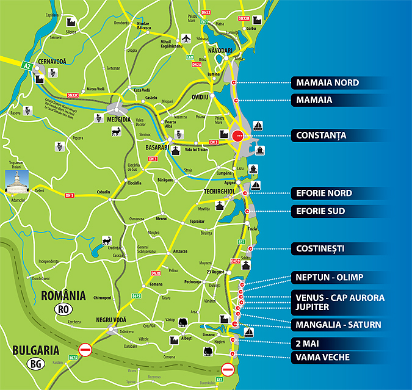

Costineşti este o localitate-staţiune de pe litoralul românesc, din judeţul Constanţa, România, aflată la ţărmul Mării Negre, reşedinţă a comunei cu acelaşi nume. La recensământul din 2002 avea o populaţie permanentă de 905 locuitori, care se înzeceşte vara.
Aşezare geografică
El a evoluat dintr-un mic sat pescăresc (1960) într-o destinaţie de vară, foarte populară printre cei tineri şi în special pentru studenţi. Un hotel şi o serie de complexuri cu vile şi bungalouri au fost create în timpul erei comuniste, acestea fiind diferite atât la stil cât şi la confort : cele mai luxoase (unde apa curentă mergea permanent iar camerele erau des curăţate) erau rezervate elitei uteciştilor şi pionierilor, unele primind şi oaspeţi comunişti străini, încât unei părţi din litoral i-a rămas, de atunci, porecla de „Golful francezilor”. După 1989, o parte din ele au fost modernizate dar au fost construite şi altele noi, inclusiv vile, în special în partea de nord a staţiunii, cu standarde europene moderne.

Staţiunea are un lac mic în interiorul ţărmului, lacul Costineşti, care are o suprafaţă de 7 hectare, şi adâncime mică, fiind înainte de inundaţii, separat de mare printr-un cordon de nisip. Lacul este unicul de pe litoralul României care nu este alimentat subteran. Datorită gradului de salinitate ridicat s-a format un strat considerabil de nămol folosit la tratarea bolilor reumatice.
Turismul
Costineşti, turismul a debutat în anii 1920, cu amatori de pescuit în mare şi de cercetări arheologice (eroziunea falezelor dezgropa în zonă cioburi, bănuţi, bucăţi de inscripţii) dar şi-a luat avântul din 1949, o dată cu inaugurarea primei tabere destinate pionierilor.
Zece ani mai târziu a fost deschisă tabăra internaţională a studenţilor.
Printre cei care au tăiat panglica s-a aflat şi Ion Iliescu, lider al studentilor comunişti – care avea să devină în 1990 preşedinte al României. Era vorba de câteva sute de corturi albastre aşezate de-a lungul falezei. După 1966, la Costineşti s-a construit masiv, Nicu Ceauşescuavând un rol important în dezvoltarea staţiunii.
Atracţii turistice
În partea de nord a plajei, aproape de ţărm, se află epava Evangheliei, vas grecesc care aducea portocale la Constanţa, eşuat în anii 1960, aceasta epavă fiind una din atracţiile Costineştiului.
Viaţa de noapte este dezvoltată în mare parte în jurul a trei discoteci în aer liber (Discotecile Ring, Tineretului şi Vox Maris). Deoarece este frecventată în mare parte de tineri, staţiunea nu doarme niciodată.
Principalele atracţii sunt:
discotecile în aer liber „Ring”, „Tineretului”, „Vox Maris”
terasa cu muzică Rock'n roll din anii 60' până astăzi: „White Horse”